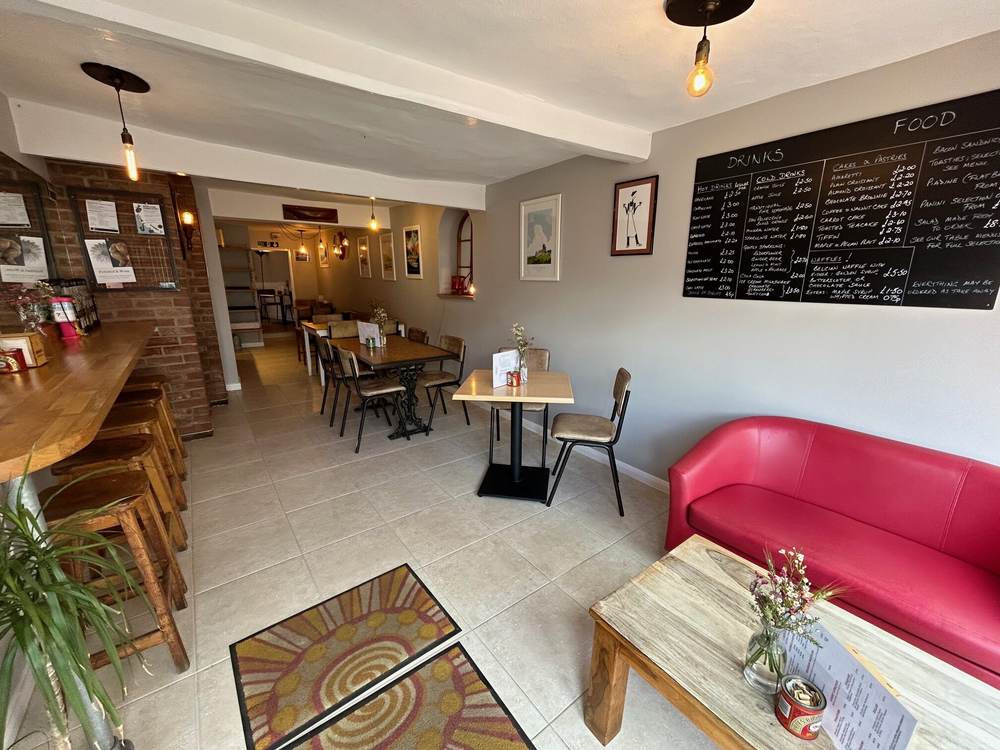

Every first Saturday of the month
Classic Car Show
The town fills up with beautifully restored vehicles from across the decades — free to attend, always worth a walk round. Come for coffee first, then wander the cars.

Sturminster Newton · Dorset
About us
Joshua's has been part of Sturminster Newton for years. We're genuinely independent — run by people who care about getting the coffee right, making the food fresh each morning, and keeping the welcome warm.
Pull up a seat. Stay as long as you like. The WiFi is free.
While you're here
A proper Dorset market town — quieter than it deserves to be.
Every first Saturday of the month
The town fills up with beautifully restored vehicles from across the decades — free to attend, always worth a walk round. Come for coffee first, then wander the cars.
A working watermill on the River Stour — one of the finest heritage sites in Dorset. Open seasonally with milling demonstrations.
Centuries old and still going. Local produce, crafts, and familiar faces in the market square every Monday morning.
Step out of town straight onto footpaths through the Blackmore Vale. Some of the best walking in Dorset, right on the doorstep.
Hardy lived and wrote here from 1876–78, describing them as his happiest years. His former home is preserved as a local landmark.
From the Cheese Festival to seasonal fairs and live music — Sturminster Newton's calendar stays fuller than most towns this size.
Opening hours
| Monday | Please call ahead |
| Tuesday | Please call ahead |
| Wednesday | Please call ahead |
| Thursday | Please call ahead |
| Friday | Please call ahead |
| Saturday | Please call ahead |
| Sunday | Please call ahead |
For confirmed times, check our website or give us a call.
Get in touch